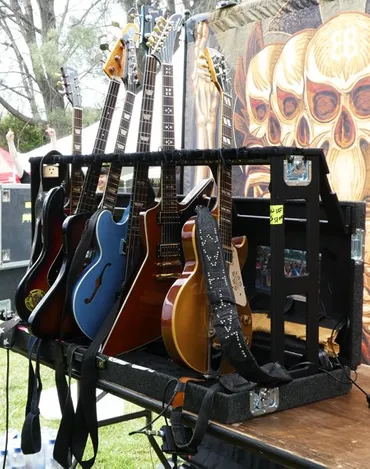
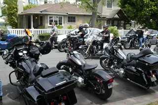
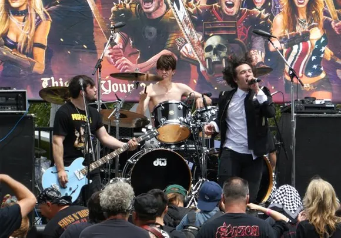
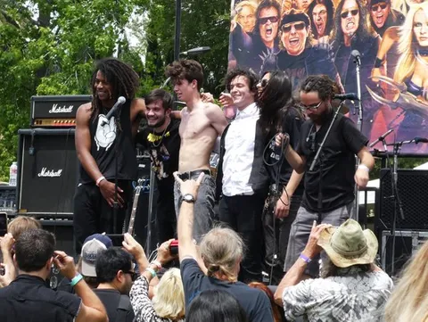
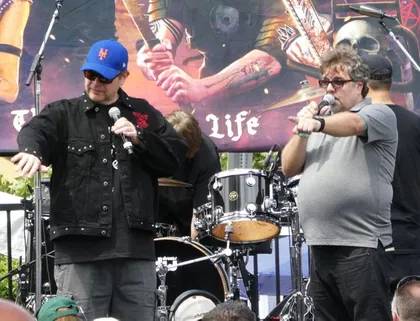
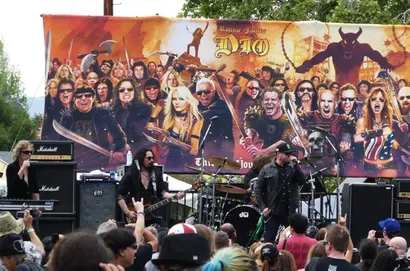
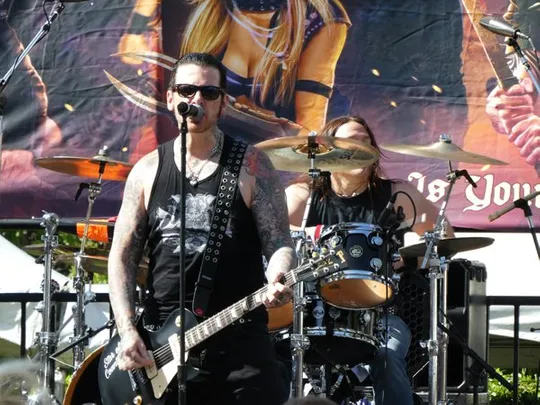
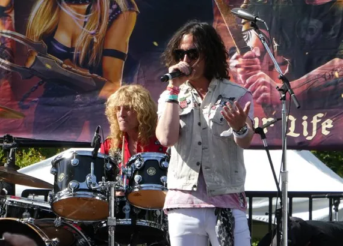

Ride For Ronnie
Los Encinos State Historic Park, CA 06/05/2018
We start the day in Encino, where at roughly 11.30am a thunderous roar can be heard coming down the street. Hundreds of bikes turn the corner down a sleepy residential road and dismount outside the park. It’s a glorious sight of metal, leather and denim. The ride is lead by Wendy, who makes the journey on the back of the bike of Ronnie’s long time right hand man, Big Scott, in her custom pink leather jacket and helmet – the jacket she’ll offer up for auction later in the day to the highest bidder. Another famous face in the convoy is Gilby Clarke, who’s a regular at these events.
The day itself has the feel of a family event rather than the standard concert vibe. Although Ronnie wasn’t a bike rider himself, his passion for metal and music was embraced by the biker community, and it really shows today.




It’s a community that has rallied round Wendy since Ronnie’s passing, and one that’ll turn up and support any events she puts on to raise money. Everyone is here to have a fun day out, and help support a good cause.
Up next is the Lynyrd Skynyrd tribute band, One More From the Road, that get through all the classics such as That Smell, Saturday Night Special
and set closer Free Bird. Following their set is one of the live auctions that punctuate the day between bands. Some of the items up are grabs are a signed guitar by the real Skynyrd’s Artemis Pyle, the aforementioned pink biker jacket from Wendy, a Heaven and Hell jacket (co-host Eddie Trunk does the modelling honours), a snazzy Black Sabbath boxset only attainable to those willing to part with some serious cash for one of their VIP meet and greets on the recent tour, and Dio Disciples Tim “Ripper” Owens’ stage worn jacket and hat that he gladly models himself and offers to hand deliver to the winner, in an attempt to add some extra value.

Next are Dio Disciples, who have just recently signed a record deal in their own right for original music. But they keep it traditional today, and belt out the Ronnie James Dio classics. Tim "Ripper" Owens trades off vocals with Oni Logan on the day’s second performance of The Mob Rules, along with Stargazer
and Neon Knights.
Last band of the day are Adler’s Allstars. Although lending his name to it, Steven Adler himself doesn’t make an appearance with the band until mid-way through the set. The various band members come from acts who have been on throughout the day doing various covers. Black Star Riders’ Ricky Warwick, who has been spectating for most of the day, also appears for a few numbers, including Motörhead’s Ace of Spades.




For more information on the Stand Up and Shout Cancer Fund, and to find out how you can help, please visit www.diocancerfund.org